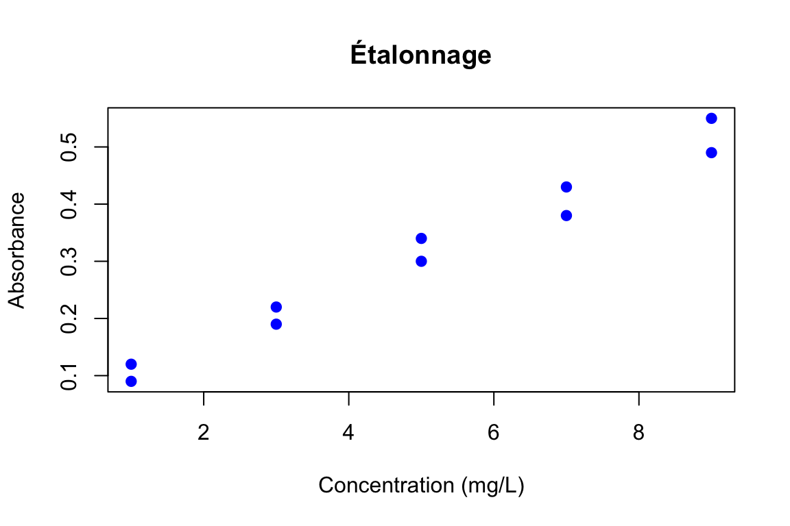
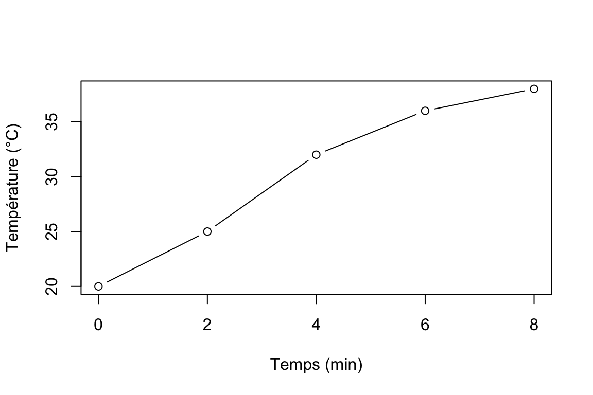
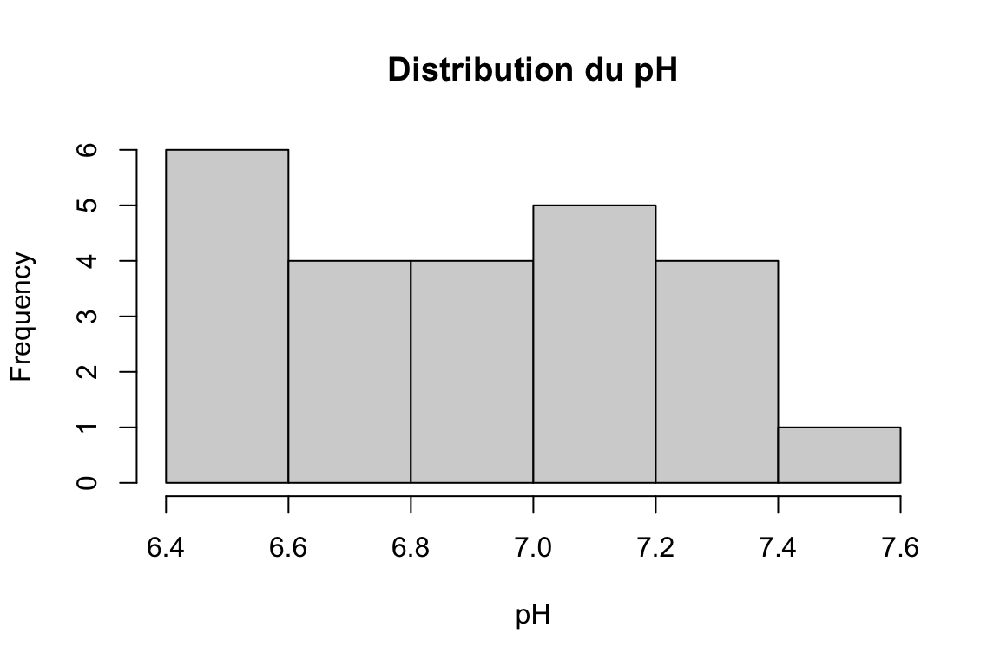
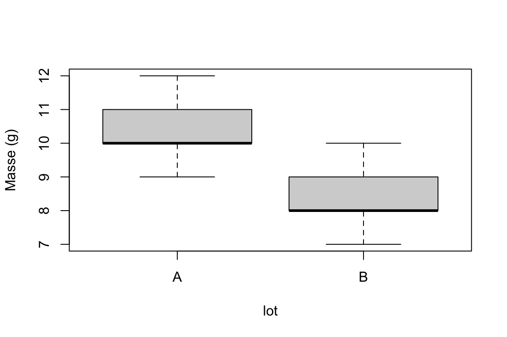
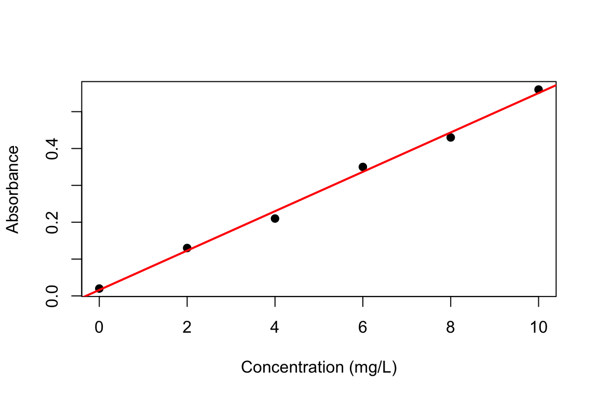

Séance 3 — Visualiser avec R de base
Bienvenue
Exécutez les exemples, modifiez une valeur, puis résolvez les exercices. Chaque exercice est indépendant : recréez les variables nécessaires. Les données sont simulées à des fins pédagogiques.
1. Nuage de points
Un nuage de points montre la relation entre deux variables quantitatives. Identifier les axes et leurs unités.
Exemple à manipuler
À vous de jouer
À partir du tableau d fourni, tracez absorbance (y) en fonction de concentration (x), avec des points bleus pleins, les unités et le titre « Étalonnage ».
Utilisez plot(), pch=19, col et main.
Graphique attendu

d <- data.frame(concentration = rep(c(1, 3, 5, 7, 9), 2),
absorbance = c(.09,.19,.30,.38,.49,.12,.22,.34,.43,.55),
lot = rep(c("A", "B"), each = 5))
plot(d$concentration, d$absorbance, pch=19, col="blue", main="Étalonnage", xlab="Concentration (mg/L)", ylab="Absorbance")Validation visuelle : comparez vos graphiques et les étapes à la solution.
Vérifiez vos connaissances
2. Courbes
Une courbe relie des observations ordonnées. Ne pas relier arbitrairement des échantillons indépendants.
Exemple à manipuler
À vous de jouer
À partir du tableau d fourni, tracez temperature (y) en fonction de temps (x), avec des points reliés.
Utilisez type=“b”.
Graphique attendu

d <- data.frame(temps = c(0,2,4,6,8), temperature = c(20,25,32,36,38))
plot(d$temps, d$temperature, type="b", xlab="Temps (min)", ylab="Température (°C)")Validation visuelle : comparez vos graphiques et les étapes à la solution.
Vérifiez vos connaissances
3. Histogrammes
Un histogramme décrit la distribution d’une variable quantitative. Les classes regroupent les valeurs.
Exemple à manipuler
À vous de jouer
À partir du tableau d fourni, tracez un histogramme de la colonne pH, avec un titre et un axe nommé.
Utilisez hist() sur la colonne pH.
Graphique attendu

d <- data.frame(lot = rep(c("A", "B"), each = 12),
pH = c(7.1,7.2,7.3,7.0,7.4,7.2,7.3,7.1,7.2,7.5,7.0,7.3,
6.4,6.6,6.8,6.5,6.9,6.7,6.6,6.8,7.0,6.4,6.7,6.5))
hist(d$pH, xlab="pH", main="Distribution du pH")Validation visuelle : comparez vos graphiques et les étapes à la solution.
Vérifiez vos connaissances
4. Boîtes à moustaches
La boîte représente les quartiles et la médiane. Les points isolés sont des observations potentiellement atypiques, pas forcément erronées.
Exemple à manipuler
À vous de jouer
À partir du tableau d fourni, comparez la colonne masse selon la colonne lot avec une boîte à moustaches.
Utilisez la formule masse ~ lot.
Graphique attendu

d <- data.frame(lot=rep(c("A","B"),each=5), masse=c(10,11,10,12,9,8,9,8,10,7))
boxplot(masse ~ lot, data=d, ylab="Masse (g)")Validation visuelle : comparez vos graphiques et les étapes à la solution.
Vérifiez vos connaissances
Régression linéaire et droite d’étalonnage
On cherche à modéliser l’absorbance A en fonction de la concentration C : \(A = aC + b\). La fonction lm(y ~ x, data = ...) estime les coefficients par moindres carrés. coef(m)[1] donne l’ordonnée à l’origine b, coef(m)[2] la pente a ; summary(m)$r.squared donne R². Un R² élevé ne prouve pas à lui seul que le modèle est approprié.
Exemple à manipuler
abline(m) ajoute la droite du modèle au graphique existant. col règle la couleur et lwd son épaisseur. Contrairement à lines(), elle ne relie pas simplement les points.
À vous de jouer
À partir du tableau d fourni, créez le modèle linéaire m reliant absorbance à concentration. Tracez les points et la droite de régression rouge. Terminez par unname(coef(m)[2]) pour valider la pente.
Utilisez lm(), plot(), abline() puis coef().
Graphique attendu

d <- data.frame(concentration = c(0, 2, 4, 6, 8, 10),
absorbance = c(.02,.13,.21,.35,.43,.56))
m <- lm(absorbance ~ concentration, data=d)
plot(d$concentration,d$absorbance,pch=19,xlab="Concentration (mg/L)",ylab="Absorbance")
abline(m,col="red",lwd=2)
unname(coef(m)[2])Vérifiez vos connaissances
Synthèse
Choisissez entre plot(), lines(), hist(), boxplot() et abline() selon la question scientifique.